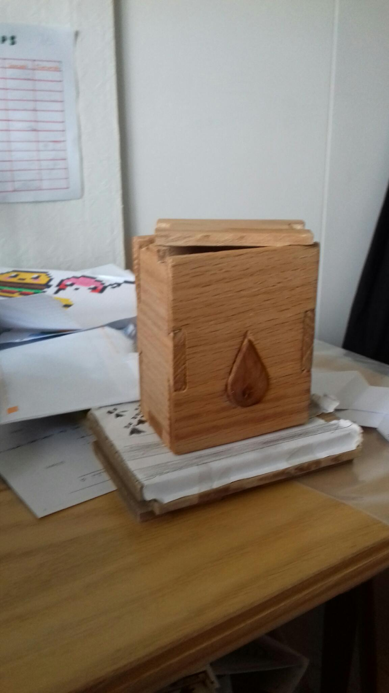
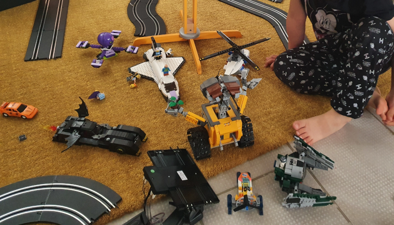
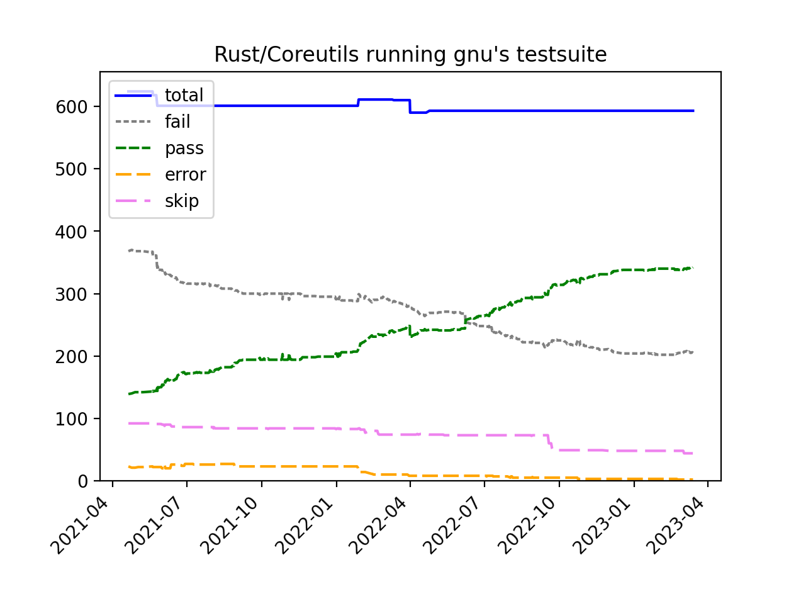
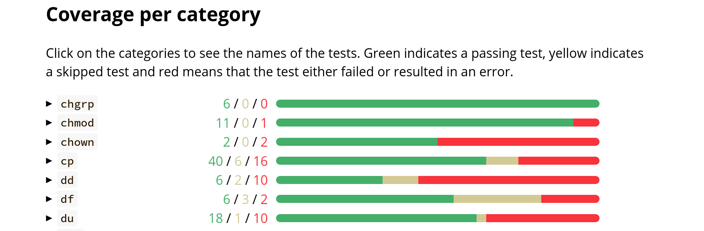

class: center, middle, inverse # Rewriting the future of the Linux essential packages in Rust ? ## Sylvestre Ledru - sylvestre@debian.org ## FOSDEM<br />Saturday February 1st 2025 --- # Who am I ? Debian developer (~20+ years), LLVM/Clang contributor, and other things. Director at Mozilla (but this work is unrelated to Mozilla). --- # Who am I ? (bis) I also uploaded the initial version of Rustc in Debian/Ubuntu. And maintainer of ripgrep, fd and some others Rust based packages in Debian/Ubuntu. --- # Summary 1. Quiz? 2. The Rust Coreutils 3. Demo 4. Proposition? --- class: center, middle, inverse template: inverse # Before we start, a quick quiz? --- # Question 1 **Who has strong opinions about GPL vs MIT licenses?** -- I don't --- # Question 2 **Who has strong opinions about the FSF?** -- I don't --- # Question 3 **Who has strong opinions about C?** -- Here, I do. C is a language from the past. It is the new Fortran/Cobol. It is time to move on. --- # Question 4 **Who has strong opinions about Rust?** -- OK, let's dive in! --- class: center, middle, inverse template: inverse # Let me tell you a story --- # Early 2020 <hr /> <hr /> --- class: center, middle, inverse template: inverse # How to make the best use this time? --- # Some people made .footnote[Credit Julien Danjou - April 2020] --- # Other did Some gardening, wood working, etc <p></p> .footnote[Credit Serge Guelton] --- # Or <p></p> --- # Me? I wanted a COVID-project and Rust for real with an impactful project. --- class: center, middle, inverse template: inverse # What about reimplementing the Coreutils in Rust ? --- # What about the Coreutils ? I have always been curious to see how it works. -- I was inspired by the work on Clang. Dropped in replacement for gcc. Missing flags are treated as bugs. TODO - add screenshot -O99 --- # What is it? About 105 commands in the GNU implementation. Some of the less famous: ```bash fold printenv tsort groups mknod printf tty ptx stdbuf stty unexpand basenc dir hostid readlink dircolors realpath chcon dirname nl relpath tac join vdir numfmt runcon expand link od paste shred comm factor logname pathchk pinky csplit fmt pr truncate ``` --- # What is it? About 105 commands in the GNU implementation. The famous: ```bash arch cut mkfifo split base32 date stat base64 dd hashsum mktemp uname basename df head more pwd mv sum uniq cat hostname nice sync unlink id uptime chgrp du install nohup rm tail users chmod echo nproc rmdir tee chown env kill test wc chroot seq timeout who cksum expr ln touch whoami shuf tr yes cp false ls sleep true mkdir sort ``` --- # What is it? About 105 commands in the GNU implementation. Full list: ```bash arch cut fold mkfifo printenv split tsort base32 date groups mknod printf stat tty base64 dd hashsum mktemp ptx stdbuf uname basename df head more pwd stty unexpand basenc dir hostid mv readlink sum uniq cat dircolors hostname nice realpath sync unlink chcon dirname id nl relpath tac uptime chgrp du install nohup rm tail users chmod echo join nproc rmdir tee vdir chown env kill numfmt runcon test wc chroot expand link od seq timeout who cksum expr ln paste shred touch whoami comm factor logname pathchk shuf tr yes cp false ls pinky sleep true csplit fmt mkdir pr sort truncate ``` Note: grep, find, less, top or watch are NOT part of the coreutils. --- # What the point ? Well, it is a good question -- 1. Why not? -- 2. Rust rocks. -- 3. It is NOT about security<br /> https://security-tracker.debian.org/tracker/source-package/coreutils<br /> Only 17 CVE in GNU/Coreutils since 2003 -- 4. It is NOT about license (for me at least).<br /> Not interested by the MIT vs GPL debate. -- 5. It is very interesting. --- # Fast forward 5 years after -- I have more grey hairs. -- -- --- # Comparing with GNU's project testsuite <p></p> --- # Stats in details Started: ``` Tue, 20 Apr 2021: "total": "624", "pass": " 139", "skip": " 92", "fail": " 368", "error": "23" ``` ``` => ``` ``` Sat, 25 Jan 2025: "total": "617", "pass": "499", "skip": "42", "fail": "76", "error": "0" ``` -- And we support Linux, Mac, Windows, Android, OpenBSD, FreeBSD, NetBSD, Solaris, Illumos, Fuchsia, Redox, WASM, etc --- # High level We are production ready! -- And used in production: -- * This laptop! -- * In cars with Apertis -- * In Snapchat Spectacles via the Yocto project -- * Microsoft is using it for VSCode web<br /> https://code.visualstudio.com/blogs/2023/06/05/vscode-wasm-wasi -- Available on all distros, some ship by default. --- TODO analogy arbre 20 ans C'est quoi le but ? Education rajouter troll sur le C ouvrir les good first bugs rajouter la liste des programmes qui connait les programmes X ou Y ? dpkg-query -Wf '${Package;-40}${Essential}\n' | grep yes réutilisation du code - uucore https://uutils.github.io/coreutils/docs/test_coverage.html TODO: about dependencies et comparaison avec C dire que c'est soutenu par aucune boite --- class: center, middle, inverse template: inverse # Why Rust rocks for this? -- # Demos --- # Demo 1 How easy is it run tests <!-- cargo test --features unix test_sort --> --- # Demo 2 Benchmarking -- Sometimes, we are faster, sometimes, we are slower. <!-- /usr/bin/sort --version hyperfine "./target/debug/coreutils sort shakespeare.txt" "/usr/bin/sort shakespeare.txt" cargo build --features unix --release hyperfine "./target/release/coreutils sort shakespeare.txt" "/usr/bin/sort shakespeare.txt" --> --- # Demo 3 Profiling <!-- samply record ./target/debug/coreutils sort shakespeare.txt patch -p1 < sort-1.diff git checkout src/ patch -p1 < sort-2.diff --> --- # Demo 4 Fuzzing --- # But why it makes sense to use Rust? * Secure by default for memory mgmt -- * Very portable -- * Terrific performances -- * Very popular language (easy to find new contributors) -- * Lot of crates (Rust libraries) available - Don't have to reimplement the wheel: - lscolors - provides the same colors as ls - walkdir - recursive operations on the fs (cp, rm, etc) - tempfile - generate some temporary files/dirs (mktemp, etc) - teminal_size - to know how to display information -- And very easy to use these crates + most of the time cross platform --- <img src="graph.png" width="100%"/> --- # Goal of this implementation? * Replicate the success of clang - dropped in replacement for GNU's -- * Cross platform - support Linux, Windows, MacOS, Android, FreeBSD, Fuchsia, etc -- * Easy to test: <b>`cargo test --features unix`</b> and fast: <b>`finished in 44.29s`</b> -- * I don't care (ie please don't troll me) but the license is MIT -- * It isn't about fighting the GNU project or the FSF --- # My Goals * My initial goals were: - Be able to boot Debian -- - Install the top 1000 packages -- - Build Firefox, LLVM and the Linux Kernel -- - Package it for Debian & Ubuntu -- * Published some <a href="https://sylvestre.ledru.info/blog/2021/03/09/debian-running-on-rust-coreutils">blog</a> <a href="https://sylvestre.ledru.info/blog/2022/01/29/an-update-on-rust-coreutils">posts</a> about it TLDR: it works. This presentation is done a Debian testing with Firefox running the Rust/coreutils --- # My Goals (bis) To achieve, we had to deploy: -- * Proper CI (and therefore build system) for all supported platforms -- * Add code coverage support -- * Improve the code coverage results (ie write plenty of tests)<br /> Currently <b>84.04%</b> -- * Plug clippy and rustfmt -- * Document the various processes -- Took about a year to be in that state --- class: center, middle, inverse template: inverse # Current status --- # Current status Running the GNU testsuite with our binaries: --- # Now, How do we work? Our goals are pretty simple: dropped in replacement for the gold standard (GNU's). Great news: the GNU test suite is amazing and we made it super easy to test with: ```bash bash util/run-gnu-test.sh tests/touch/not-owner.sh ``` Will run a GNU's test for touch using the Rust implementation --- # Remaining work We have a simple script to list the failing tests: ```bash python3 util/remaining-gnu-error.py ``` <hr /> https://uutils.github.io/user/test_coverage.html <p></p> --- # Collaboration with GNU We contributed to the GNU implementation: * Programming issues - <a href="https://debbugs.gnu.org/cgi/bugreport.cgi?bug=50070">chmod reads uninitialized variables</a> -- * Inconsistencies - <a href="https://debbugs.gnu.org/cgi/bugreport.cgi?bug=49239">Unexpected results with sort -V</a> -- * Tests improvements - <a href="https://github.com/coreutils/coreutils/commit/3564e3a572b64c5384519d735dbbb88690438eae">ls --dired tests</a> or <a href="https://github.com/coreutils/coreutils/commit/1ac8630f1eed599e84f5a45f3eb14ae32546ac94">mktemp -t: $TMPDIR has higher priority than -p</a> -- * Testsuite improvements - <a href="https://github.com/coreutils/coreutils/commit/8367b95a13b96b96db93a7339c094f813af877c9">Tests separated in different directories</a> --- # Dropped in replacement? Also means output. Example: GNU mkdir: ```bash $ mkdir -p -v a/../b/../c mkdir: created directory 'a' mkdir: created directory 'a/../b' mkdir: created directory 'a/../b/../c' ``` -- and we had ```bash $ ./target/debug/mkdir -p -v a/../b/../c ./target/debug/mkdir: created directory 'a/../b/../c' ``` .footnote[https://github.com/uutils/coreutils/pull/3217] --- # Fuzzing to the rescue? Fuzzing is great to find bugs. And can be extended with Differential Testing. -- <a href="https://en.wikipedia.org/wiki/Differential_testing">Wikipedia</a>: <i> a popular software testing technique that attempts to detect bugs, by providing the same input to a series of similar applications (or to different implementations of the same application), and observing differences in their execution.</i> -- We can check 3 parameters: -- * stdout -- * stderr -- * exit code --- # Fuzzing to the rescue? - Example Differential fuzzing between GNU and our implementation of the `expr` command. -- ``` Running test ["expr", "49", "<", "27", "%", "75S"] Test Type: expr Input: ["49", "<", "27", "%", "75S"] Rust stderr: Expected an integer operand GNU stderr: non-integer argument Discrepancy detected: stderr differs Test completed with discrepancies for expr: ["49", "<", "27", "%", "75S"] ``` --- class: center, middle, inverse template: inverse # Performances ? --- # Performance Disclaimer: benchmarking performances is HARD Some binaries are significantly faster. -- Example #1: ``` $ hyperfine -r 10 \ "target/release/coreutils sort -R shakespeare.txt > shakespeare.txt.rand; \ target/release/coreutils sort shakespeare.txt.rand > /dev/null" \ "sort -R shakespeare.txt > shakespeare.txt.rand; \ sort shakespeare.txt > /dev/null" é [...] Summary 'target/release/coreutils sort -R shakespeare.txt > shakespeare.txt.rand; target/release/coreutils sort shakespeare.txt.rand > /dev/null' ran 4.63 ± 0.19 times faster than 'sort -R shakespeare.txt > shakespeare.txt.rand; sort shakespeare.txt > /dev/null' ``` 4.63 times faster than GNU's --- # Performance Example #2: ``` $ bash "Clone Firefox" $ hyperfine -i --warmup 2 "target/release/coreutils ls -al -R ~/dev/mozilla/mozilla-unified.hg > /dev/null" "ls -al -R ~/dev/mozilla/mozilla-unified.hg > /dev/null" [...] Summary 'target/release/coreutils ls -al -R ~/dev/mozilla/mozilla-unified.hg > /dev/null' ran 1.43 ± 0.15 times faster than 'ls -al -R ~/dev/mozilla/mozilla-unified.hg > /dev/null' ``` 1.43 times faster than GNU's -- Similar result for cp -R <!-- ``` $ hyperfine "rm -rf /tmp/coreutils.git; ./target/release/cp -r ../coreutils.git /tmp" "rm -rf /tmp/coreutils.git; /usr/bin/cp -r ../coreutils.git /tmp" Summary 'rm -rf /tmp/coreutils.git; ./target/release/cp -r ../coreutils.git /tmp' ran 1.47 ± 0.34 times faster than 'rm -rf /tmp/coreutils.git; /usr/bin/cp -r ../coreutils.git /tmp' ``` --> --- # Performance To be fair, we can be slower too Example #3: ``` $ hyperfine "seq 18446744073708551615 18446744073709551615 | factor" \ "./target/release/coreutils seq 18446744073708551615 18446744073709551615| ./target/release/coreutils factor" [...] 'seq 18446744073708551615 18446744073709551615 | factor' ran 5.08 ± 0.01 times faster than './target/release/coreutils seq 18446744073708551615 18446744073709551615| ./target/release/coreutils factor' ``` --- # Extending the coreutils We took the liberty to add extra features like: * progress bars for cp & mv -- * b3sum (works like b2sum) -- * cut `-w` from FreeBSD - <i>separate fields by whitespace (Space and Tab)</i> --- # What is next? * Implement missing options in the various binaries -- * Complete the full compatibility with the GNU tools -- * Improve performances on some key programs --- class: center, middle, inverse template: inverse # OK, Coreutils - done. What is next? --- # In parallel We have been working on findutils and diffutils. --- # Big plan We want to do the same with most of the essential packages on Debian. What are the essential packages? --- # An old Chinese proverb The best time to plant a tree was twenty years ago. The second best is now. --- # The list Who knows what is inside? util TODO --- It is a community effort and we have much to do. Implement programs, options , compatbility --- class: center, middle, inverse template: inverse # Thanks for your time --- class: center, middle, inverse template: inverse # Reminder: not a Mozilla project. --- class: center, middle, inverse template: inverse # Let's try together